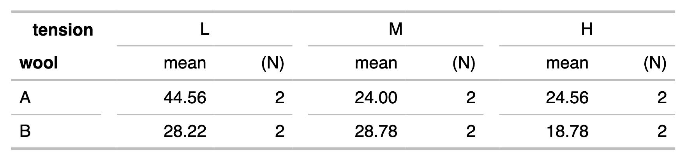
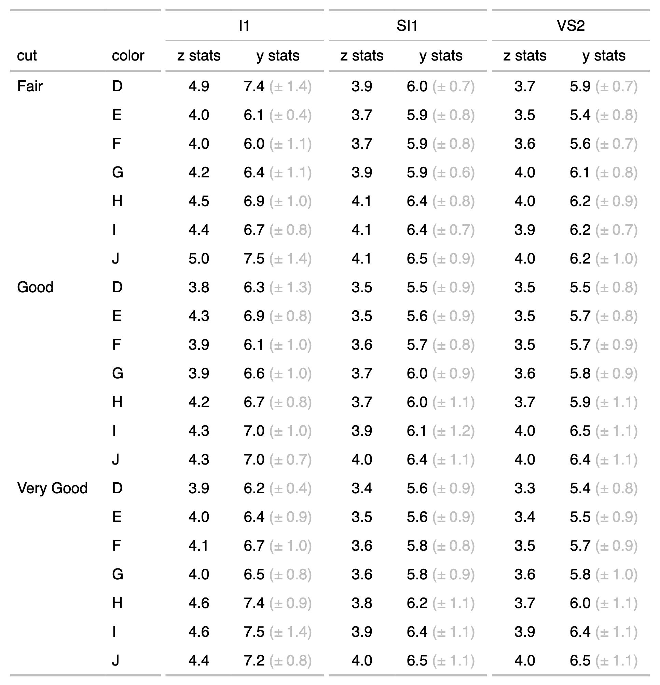

It tabulates a data.frame representing an aggregation which is then transformed as a flextable. The function allows to define any display with the syntax of flextable in a table whose layout is showing dimensions of the aggregation across rows and columns.
an aggregated data.frame
column names to use in rows dimensions
column names to use in columns dimensions
additional data that will be merged with table and placed after the columns presenting the row dimensions.
additional data that will be merged with table and placed at the end of the table.
additional data that will be merged with
table, the columns are not presented but can be used
with compose() or mk_par() function.
a list of call to as_paragraph() - these
calls will be applied to the row dimensions (the name is
used to target the displayed column).
named arguments calling function as_paragraph().
The names are used as labels and the values are evaluated
when the flextable is created.
an object returned by function
tabulator().
an object of class tabulator.
summary(tabulator): call summary() to get
a data.frame describing mappings between variables
and their names in the flextable. This data.frame contains
a column named col_keys where are stored the names that
can be used for further selections.
This is very first version of the function; be aware it can evolve or change.
ft_1 appears as:

ft_2 appears as:

n_format <- function(z){
x <- sprintf("%.0f", z)
x[is.na(z)] <- "-"
x
}
set_flextable_defaults(digits = 2, border.color = "gray")
if(require("stats")){
dat <- aggregate(breaks ~ wool + tension,
data = warpbreaks, mean)
cft_1 <- tabulator(
x = dat, rows = "wool",
columns = "tension",
`mean` = as_paragraph(as_chunk(breaks)),
`(N)` = as_paragraph(
as_chunk(length(breaks), formatter = n_format ))
)
ft_1 <- as_flextable(cft_1)
ft_1
}
#> a flextable object.
#> col_keys: `wool`, `dummy1`, `@L@mean`, `@L@(N)`, `dummy2`, `@M@mean`, `@M@(N)`, `dummy3`, `@H@mean`, `@H@(N)`
#> header has 2 row(s)
#> body has 2 row(s)
#> original dataset sample:
#> wool breaks@L breaks@M breaks@H mean@L mean@M mean@H (N)@L (N)@M (N)@H dummy1
#> 1 A 44.55556 24.00000 24.55556
#> 2 B 28.22222 28.77778 18.77778
#> @L@mean @L@(N) dummy2 @M@mean @M@(N) dummy3 @H@mean @H@(N)
#> 1
#> 2
if(require("data.table") && require("ggplot2")){
multi_fun <- function(x) {
list(mean = mean(x),
sd = sd(x))
}
myformat <- function(z){
x <- sprintf("%.1f", z)
x[is.na(z)] <- ""
x
}
grey_txt <- fp_text_default(color = "gray")
dat <- as.data.table(ggplot2::diamonds)
dat <- dat[cut %in% c("Fair", "Good", "Very Good")]
dat <- dat[clarity %in% c("I1", "SI1", "VS2")]
dat <- dat[, unlist(lapply(.SD, multi_fun),
recursive = FALSE),
.SDcols = c("z", "y"),
by = c("cut", "color", "clarity")]
tab_2 <- tabulator(
x = dat, rows = c("cut", "color"),
columns = "clarity",
`z stats` = as_paragraph(
as_chunk(z.mean, formatter = myformat)),
`y stats` = as_paragraph(
as_chunk(y.mean, formatter = myformat),
as_chunk(" (\u00B1 ", props = grey_txt),
as_chunk(y.sd, formatter = myformat, props = grey_txt),
as_chunk(")", props = grey_txt)
)
)
ft_2 <- as_flextable(tab_2)
ft_2 <- autofit(x = ft_2, add_w = .05)
ft_2
}
#> a flextable object.
#> col_keys: `cut`, `color`, `dummy1`, `@I1@z stats`, `@I1@y stats`, `dummy2`, `@SI1@z stats`, `@SI1@y stats`, `dummy3`, `@VS2@z stats`, `@VS2@y stats`
#> header has 2 row(s)
#> body has 21 row(s)
#> original dataset sample:
#> cut color z.mean@I1 z.mean@SI1 z.mean@VS2 z.sd@I1 z.sd@SI1 z.sd@VS2
#> 1 Fair D 4.905000 3.864828 3.704800 0.9796768 0.4383792 0.4685449
#> 2 Fair E 4.008889 3.739077 3.529286 0.3876030 0.5040763 0.5245551
#> 3 Fair F 4.000857 3.726506 3.593774 0.7043536 0.5419464 0.4990191
#> 4 Fair G 4.233962 3.852319 3.955556 0.7219374 0.4371907 0.4868617
#> 5 Fair H 4.549231 4.110533 3.975122 0.7059102 0.5221341 0.5877462
#> y.mean@I1 y.mean@SI1 y.mean@VS2 y.sd@I1 y.sd@SI1 y.sd@VS2 z stats@I1
#> 1 7.422500 5.957069 5.886800 1.4170009 0.6556823 0.7054828
#> 2 6.061111 5.903692 5.449524 0.4297221 0.8057694 0.7673392
#> 3 6.040571 5.871325 5.626226 1.0820350 0.8438367 0.6970742
#> 4 6.434906 5.922754 6.137333 1.0849683 0.6362248 0.7873442
#> 5 6.858462 6.355467 6.161220 1.0348428 0.8221269 0.9045750
#> z stats@SI1 z stats@VS2 y stats@I1 y stats@SI1 y stats@VS2 dummy1 @I1@z stats
#> 1
#> 2
#> 3
#> 4
#> 5
#> @I1@y stats dummy2 @SI1@z stats @SI1@y stats dummy3 @VS2@z stats @VS2@y stats
#> 1
#> 2
#> 3
#> 4
#> 5
if(require("data.table")){
#' # data.table version
dat <- melt(as.data.table(iris),
id.vars = "Species",
variable.name = "name",value.name = "value")[,
list(avg = mean(value, na.rm = TRUE),
sd = sd(value, na.rm = TRUE)),
by = c("Species", "name")
]
# dplyr version
# library(dplyr)
# dat <- iris %>%
# pivot_longer(cols = -c(Species)) %>%
# group_by(Species, name) %>%
# summarise(avg = mean(value, na.rm = TRUE),
# sd = sd(value, na.rm = TRUE),
# .groups = "drop")
tab_3 <- tabulator(
x = dat, rows = c("Species"),
columns = "name",
`mean (sd)` = as_paragraph( as_chunk(avg),
" (", as_chunk(sd), ")")
)
ft_3 <- as_flextable(tab_3, separate_with = character(0))
ft_3
}
#> a flextable object.
#> col_keys: `Species`, `dummy1`, `Sepal.Length@mean (sd)`, `dummy2`, `Sepal.Width@mean (sd)`, `dummy3`, `Petal.Length@mean (sd)`, `dummy4`, `Petal.Width@mean (sd)`
#> header has 1 row(s)
#> body has 3 row(s)
#> original dataset sample:
#> Species avg@Sepal.Length avg@Sepal.Width avg@Petal.Length avg@Petal.Width
#> 1 setosa 5.006 3.428 1.462 0.246
#> 2 versicolor 5.936 2.770 4.260 1.326
#> 3 virginica 6.588 2.974 5.552 2.026
#> sd@Sepal.Length sd@Sepal.Width sd@Petal.Length sd@Petal.Width
#> 1 0.3524897 0.3790644 0.1736640 0.1053856
#> 2 0.5161711 0.3137983 0.4699110 0.1977527
#> 3 0.6358796 0.3224966 0.5518947 0.2746501
#> mean (sd)@Sepal.Length mean (sd)@Sepal.Width mean (sd)@Petal.Length
#> 1
#> 2
#> 3
#> mean (sd)@Petal.Width dummy1 Sepal.Length@mean (sd) dummy2
#> 1
#> 2
#> 3
#> Sepal.Width@mean (sd) dummy3 Petal.Length@mean (sd) dummy4
#> 1
#> 2
#> 3
#> Petal.Width@mean (sd)
#> 1
#> 2
#> 3
init_flextable_defaults()